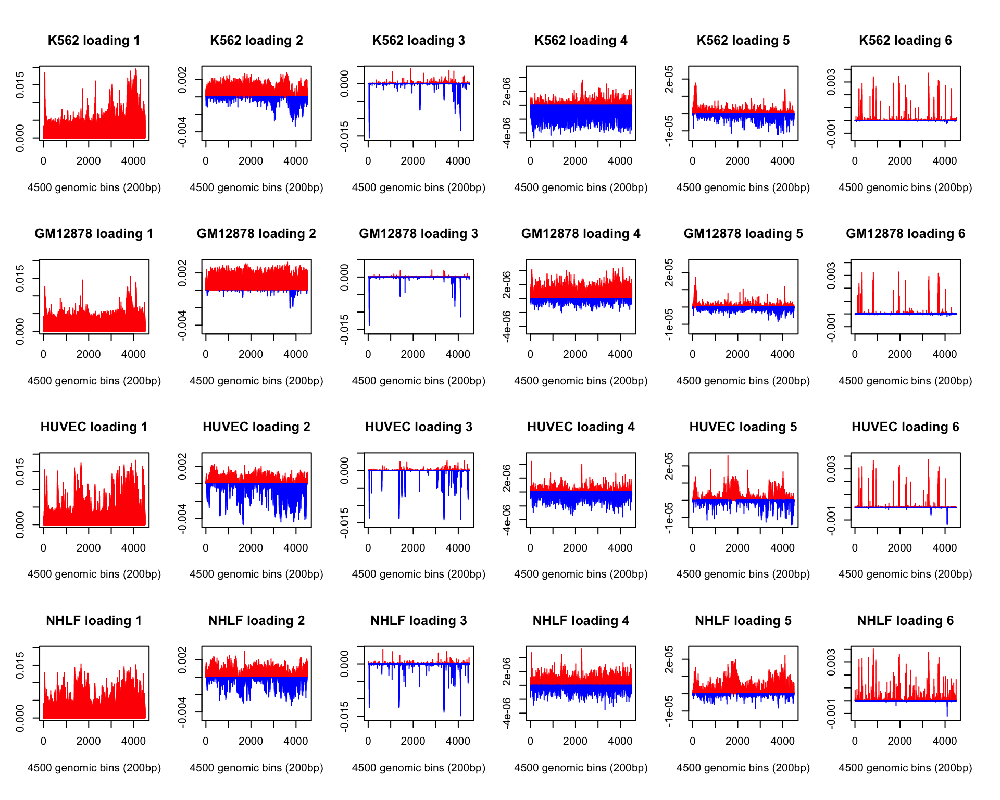

Last updated: 2017-03-05
Code version: 1eb4bdc

sessionInfo()R version 3.3.2 (2016-10-31)
Platform: x86_64-apple-darwin13.4.0 (64-bit)
Running under: OS X Yosemite 10.10.5
locale:
[1] en_US.UTF-8/en_US.UTF-8/en_US.UTF-8/C/en_US.UTF-8/en_US.UTF-8
attached base packages:
[1] stats graphics grDevices utils datasets methods base
other attached packages:
[1] workflowr_0.3.0 rmarkdown_1.3 flashr_0.1.1
loaded via a namespace (and not attached):
[1] Rcpp_0.12.9 knitr_1.15.1 magrittr_1.5
[4] MASS_7.3-45 doParallel_1.0.10 pscl_1.4.9
[7] SQUAREM_2016.8-2 lattice_0.20-34 foreach_1.4.3
[10] ashr_2.1.5 stringr_1.2.0 tools_3.3.2
[13] parallel_3.3.2 grid_3.3.2 git2r_0.18.0
[16] htmltools_0.3.5 iterators_1.0.8 yaml_2.1.14
[19] rprojroot_1.2 digest_0.6.12 codetools_0.2-15
[22] rsconnect_0.7 evaluate_0.10 stringi_1.1.2
[25] backports_1.0.5 truncnorm_1.0-7